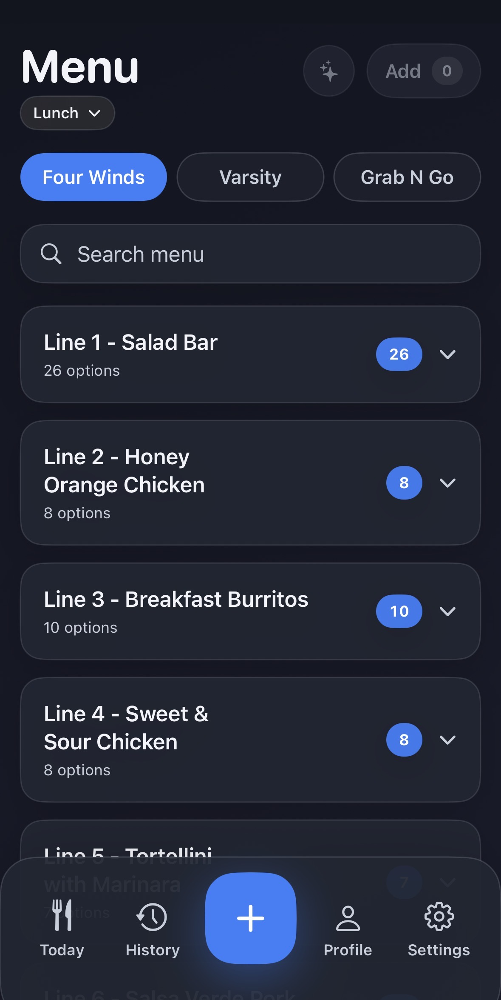
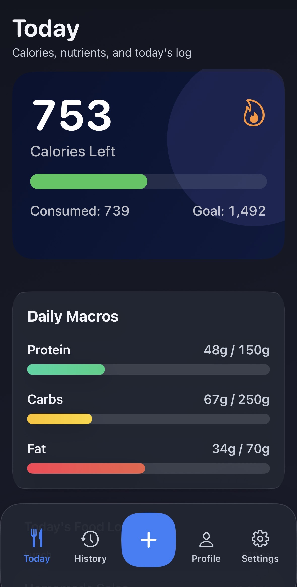
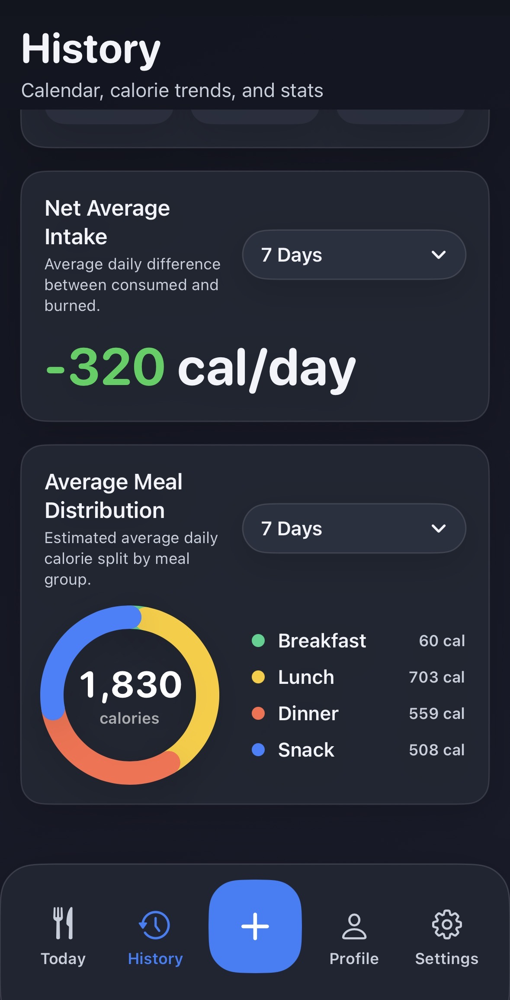

Track your calories
with zero friction
Calorie Tracker makes it effortlessly easy to monitor your nutrition. Connect to campus menus, use AI to estimate portions from photos, and track your daily macros all in one place.
PCC Dining menus built in
Your campus menus are updated daily. Connect directly to PCC Dining and view today's accurate calorie and protein content without ever looking up individual ingredients.
You can even snap a tray photo and get intelligent AI portion estimates based on what's available today.

Your daily targets at a glance
A beautifully simple unified dashboard automatically adjusts your daily calorie goals based on your active energy and step data from Apple Health.
Easily track your essential nutrients and daily macros to keep yourself on track.

Insightful review over time
Review comprehensive historical data spanning from 7 days up to 2 years. Identify long-term trends and correlations in your nutritional habits in simple, easy to read charts.
All your data is kept securely on your device, with optional private iCloud sync for continuity across your Apple ecosystem.
